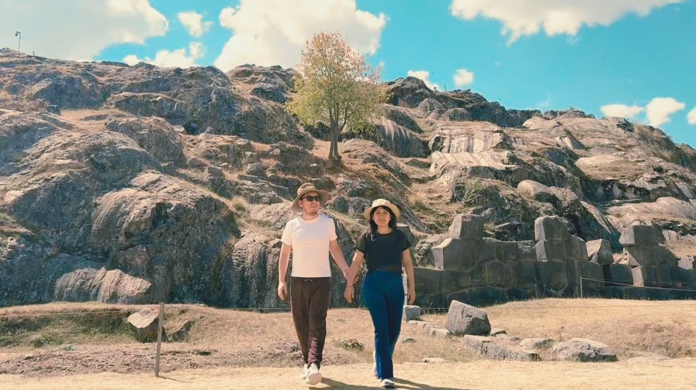
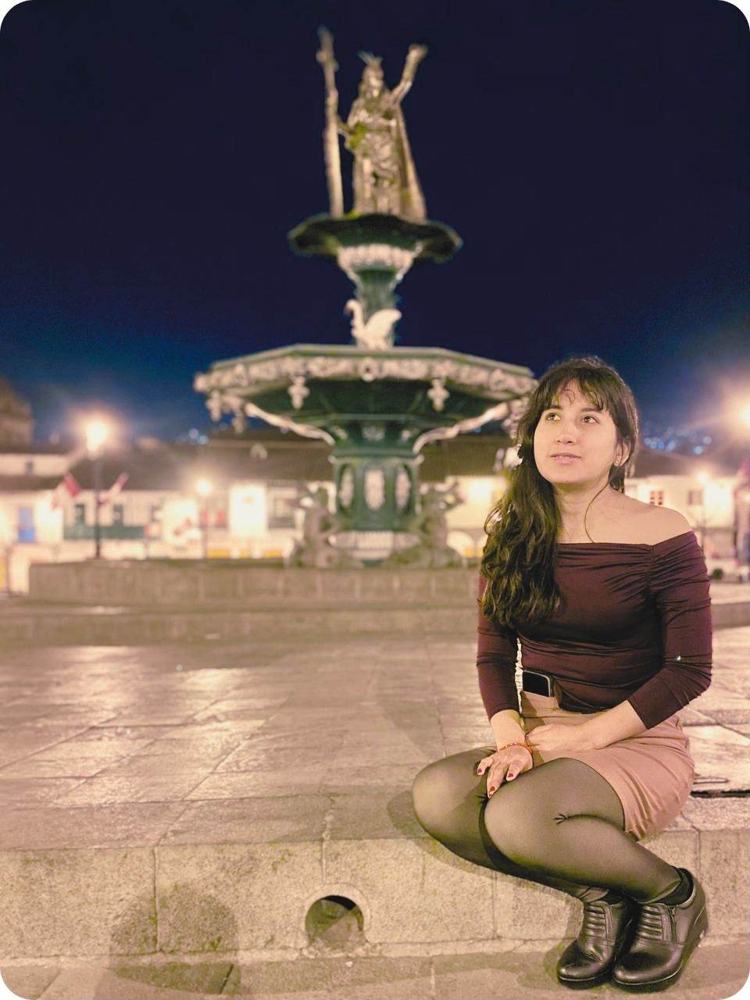

Diez meses
Llegaste a darle a mis días una chispa distinta.
A veces pienso en lo mucho que ha cambiado mi vida desde que estás en ella. Han pasado apenas diez meses, pero siento que llegaste a darle una chispa distinta a mis días.
Antes tenía una rutina bastante marcada, todo en su sitio, todo más o menos predecible, y apareciste tú a ponerle alegría, emoción y algo que me hacía falta sin que yo siquiera lo supiera.

Nuestros sábados
No importa demasiado qué hagamos; lo que disfruto es saber que voy a estar contigo.
Me hace feliz estar contigo. Disfruto conversar contigo, salir, reírnos, hacer planes o simplemente compartir el tiempo.
Amo nuestros sábados, ir a bailar salsa juntos y tener ese espacio que poco a poco se ha vuelto tan nuestro. Son momentos que espero durante toda la semana.

Quién eres
Mientras más te conozco, más razones encuentro para admirarte.
Hay algo de ti que admiro muchísimo, y es la persona que eres. Me gusta tu forma de preocuparte por las personas que quieres, lo presente que estás para tu familia y la manera tan natural que tienes de ayudar y cuidar a los tuyos. Es algo que dice muchísimo de ti y del corazón que tienes.
También admiro profundamente todo lo que has conseguido. Sé que nada te ha sido regalado y que detrás de lo que eres hoy hay muchos años de esfuerzo, sacrificio y constancia. Me gusta ver todo lo que has construido por ti misma, porque habla de una mujer fuerte, responsable y luchadora, pero que al mismo tiempo conserva esa sencillez tan bonita que tienes.
Una frase
“Cuando pienso en mi futuro, me hace feliz imaginarte ahí.”
— Andree
Lo que viene
Encontré a una persona con quien quiero compartir mi vida.
También me gusta mucho pensar en nosotros hacia adelante. En los proyectos que podemos construir, en las cosas que todavía nos faltan vivir, en los lugares que conoceremos, en los sueños que iremos cumpliendo y en todas esas pequeñas cosas que algún día podrían convertirse simplemente en nuestra vida cotidiana.
No sé exactamente cómo será todo ni qué vueltas dará la vida, pero hay algo que sí tengo claro: cuando pienso en mi futuro, me hace feliz imaginarte ahí. Siento que encontré a una persona realmente especial, alguien con quien quiero compartir mi vida, mis proyectos y mis sueños.

Gracias
Los veo, y los valoro muchísimo.
Quiero agradecerte. Por estar siempre pendiente de mí, por preocuparte por cómo estoy, por acordarte de las cosas que me gustan, por ayudarme cada vez que tengo una idea o necesito una mano y por todos esos detalles que quizá para ti parecen pequeños, pero que yo sí veo.
Tienes una forma muy bonita de quererme. Siempre estás atenta a mí, a lo que necesito, a cómo puedes ayudarme o simplemente hacerme sentir bien. Quizá no siempre sé expresarte cuánto significa eso para mí, pero quiero que sepas que lo valoro de verdad.
Soy muy feliz contigo. Valoro muchísimo todo lo que haces por mí, pero sobre todo, valoro muchísimo tenerte a ti.
Andree · 28 de agosto, 2026